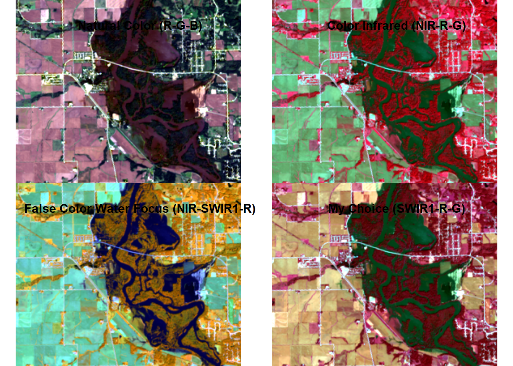
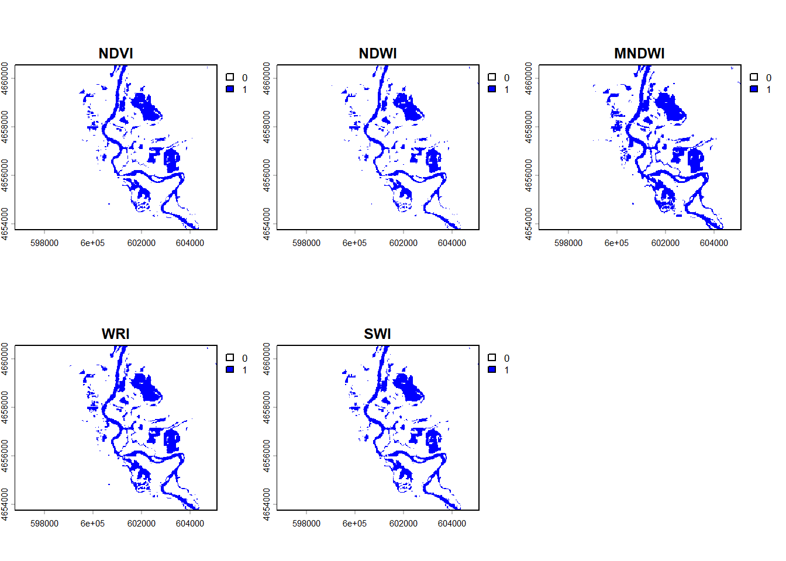
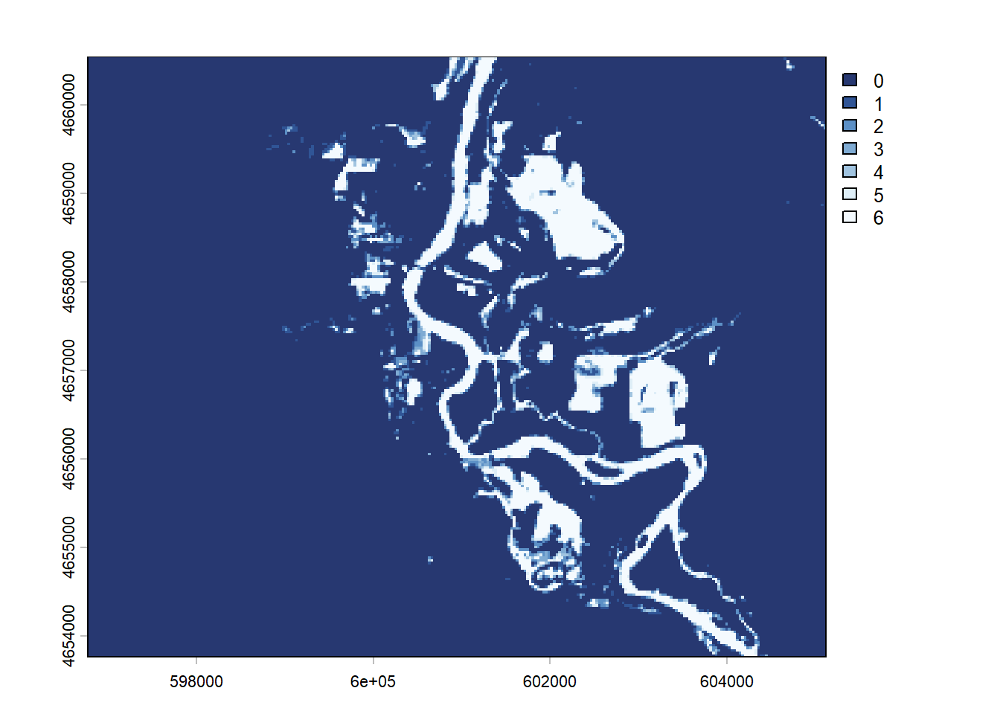

On September 26, 2016 at 11:47 a.m. U.S. Central Daylight Time (16:47 UTC) the Cedar and Wapsipinicon rivers in Iowa surged producing a flood wave that breached the river banks. The water level of the Cedar River measured ~20 feet — 8 feet above flood stage—near the city of Cedar Rapids.
The water level continued to rise until it peaked at ~22 feet on September 27. This event had only been exceeded once, in June 2008, when thousands of people were encouraged to evacuate from Cedar Rapids, the second-most-populous city in Iowa.
In this lab we are interested in the impacts in Palo Iowa because it is up stream of Cedar Rapids, contains a large amount of farm land, and does not have a forecast location to provide warning.
We will use the terra and rstac packages - along with our understanding of raster data and categorization - to create flood images using mutliband Landsat Imagery, thresholding, and classification methods.
Libraries
library(rstac) # STAC API
Warning: package 'rstac' was built under R version 4.5.3
library(terra) # Raster Data handling
Warning: package 'terra' was built under R version 4.5.3
terra 1.9.1
library(sf) # Vector data processing
Warning: package 'sf' was built under R version 4.5.3
Linking to GEOS 3.14.1, GDAL 3.12.1, PROJ 9.7.1; sf_use_s2() is TRUE
Warning: package 'mapview' was built under R version 4.5.3
Almost all remote sensing / image analysis begins with the same basic steps:
Identify an area of interest (AOI)
Identify the temporal range of interest
Identify the relevant images
Download the images
Analyze the products
Step 1: AOI identification
First we need to identify an AOI. We want to be able to extract the flood extents for Palo, Iowa and its surroundings. To do this we will use the geocoding capabilities within the AOI package.
Step 2: Temporal identification
The flood event occurred on September 26, 2016. A primary challenge with remote sensing is the fact that all satellite imagery is not available at all times. In this case Landsat 8 has an 8 day revisit time. To ensure we capture an image within the date of the flood, lets set our time range to the period between September 24th - 29th of 2016. We will define this duration in the form YYYY-MM-DD/YYYY-MM-DD.
Step 3: Identifying the relevant images
The next step is to identify the images that are available for our AOI and time range. This is where the rstac package comes in. The rstac package provides a simple interface to the SpatioTemporal Asset Catalog (STAC) API, which is a standard for discovering and accessing geospatial data.
STAC is a specification for describing geospatial data in a consistent way, making it easier to discover and access datasets. It provides a standardized way to describe the metadata of geospatial assets, including their spatial and temporal extents, data formats, and other relevant information.
Catalog: A catalog is a collection of STAC items and collections. It serves as a top-level container for organizing and managing geospatial data. A catalog can contain multiple collections, each representing a specific dataset or group of related datasets.
Items: The basic unit of data in STAC. Each item represents a single asset, such as a satellite image or a vector dataset. Items contain metadata that describes the asset, including its spatial and temporal extents, data format, and other relevant information.
Asset: An asset is a specific file or data product associated with an item. For example, a single satellite image may have multiple assets, such as different bands or processing levels. Assets are typically stored in a cloud storage system and can be accessed via URLs.
For this project we are going to use a STAC catalog to identify the data available for our analysis. We want data from the Landsat 8 collection which is served by the USGS (via AWS), Google, and Microsoft Planetary Computer (MPC). MPC is the one that provides free access so we will use that data store.
If you go to this link you see the JSON representation of the full data holdings. If you CMD/CTL+F on that page for Landsat you’ll find the references for the available data stores.
Within R, we can open a connection to this endpoint with the stac function:
# Open a connection to the MPC STAC API(stac_query <-stac("https://planetarycomputer.microsoft.com/api/stac/v1"))
That connection will provide an open entry to ALL data hosted by MPC. The stac_search function allows us to reduce the catalog to assets that match certain criteria (just like dplyr::filter reduces a data.frame). The get_request() function sends your search to the STAC API returning the metadata about the objects that match a criteria. The service implementation at MPC sets a return limit of 250 items (but it could be overridden with the limit parameter).
Here, we are interested in the “Landsat Collection 2 Level-2” data. From the JSON file (seen in the browser). To start, lets search for that collection using the stac -> stac_search –> get_request workflow refining your search to our AOI and time range of interest.
The last thing we need to do, is sign this request. In rstac, items_sign(sign_planetary_computer()) signs STAC item asset URLs retrieved from Microsoft’s Planetary Computer, ensuring they include authentication tokens for access. sign_planetary_computer() generates the necessary signing function, and items_sign() applies it to STAC items. This is essential for accessing datasets hosted on the Planetary Computer, and other catalog were data access might be requester-paid or limited.
With that, we are ready to download the data using assets_download(). In total, a Landsat 8 item has the following 11 bands
For this lab, lets just get the first 6 bands. Assets are extracted from a STAC item by the asset name (look at the print statements of the stac_query). Let’s define a vector of the assets we want:
Now we can use the assets_download() function to download the data. The output_dir argument specifies where to save the files, and the overwrite argument specifies whether to overwrite existing files with the same name.
And that does it! You now have the process needed to get you data.
With a set of local files, you can create a raster object! Remember your files need to be in the order of the bands (double check step 2). - list.files() can search a directory for a pattern and return a list of files. The recursive argument will search all sub-directories. The full.names argument will return the full path to the files.
The rast() function will read the files into a raster object.
The setNames() function will set the names of the bands to the names we defined above.
This code was not working for me so I plugged it into ChatGBT version 5.3 and it edited my code to prevent errors. OpenAI. (2026). ChatGPT (GPT-5.3) [“Why is my code not running (including code and error message)]. https://chat.openai.com/.
[1] "PROJCRS[\"WGS 84 / UTM zone 15N\",\n BASEGEOGCRS[\"WGS 84\",\n DATUM[\"World Geodetic System 1984\",\n ELLIPSOID[\"WGS 84\",6378137,298.257223563,\n LENGTHUNIT[\"metre\",1]]],\n PRIMEM[\"Greenwich\",0,\n ANGLEUNIT[\"degree\",0.0174532925199433]],\n ID[\"EPSG\",4326]],\n CONVERSION[\"UTM zone 15N\",\n METHOD[\"Transverse Mercator\",\n ID[\"EPSG\",9807]],\n PARAMETER[\"Latitude of natural origin\",0,\n ANGLEUNIT[\"degree\",0.0174532925199433],\n ID[\"EPSG\",8801]],\n PARAMETER[\"Longitude of natural origin\",-93,\n ANGLEUNIT[\"degree\",0.0174532925199433],\n ID[\"EPSG\",8802]],\n PARAMETER[\"Scale factor at natural origin\",0.9996,\n SCALEUNIT[\"unity\",1],\n ID[\"EPSG\",8805]],\n PARAMETER[\"False easting\",500000,\n LENGTHUNIT[\"metre\",1],\n ID[\"EPSG\",8806]],\n PARAMETER[\"False northing\",0,\n LENGTHUNIT[\"metre\",1],\n ID[\"EPSG\",8807]]],\n CS[Cartesian,2],\n AXIS[\"(E)\",east,\n ORDER[1],\n LENGTHUNIT[\"metre\",1]],\n AXIS[\"(N)\",north,\n ORDER[2],\n LENGTHUNIT[\"metre\",1]],\n USAGE[\n SCOPE[\"Navigation and medium accuracy spatial referencing.\"],\n AREA[\"Between 96°W and 90°W, northern hemisphere between equator and 84°N, onshore and offshore. Canada - Manitoba; Nunavut; Ontario. Ecuador -Galapagos. Guatemala. Mexico. United States (USA).\"],\n BBOX[0,-96,84,-90]],\n ID[\"EPSG\",32615]]"
res(r)
[1] 30 30
Question 1: Data Access
Download all the data needed for this lab. What are the dimensions of your stacked image? What is the CRS? What is the cell resolution?
The dimensions of the stacked image raster are 7801 rows × 7681 columns × 6 bands. The coordinate reference system (CRS) is WGS 84, UTM Zone 15N. Lastly, the cell resolution of this raster image is 30 m × 30 m.
Step 5: Analyize the images
We only want to analyze our image for the regions surrounding Palo (our AOI). Transform your AOI to the CRS of the landsat stack and use it to crop your raster stack.
Awesome! We have now (1) identified, (2) downloaded, and (3) saved our images.
We have loaded them as a multiband SpatRast object and cropped the domain to our AOI. Lets make a few RGB plots to see what these images reveal.
Note
There are many online examples that discuss the applications of the available bands in Landsat. What we want to do here is simply show how loading different combinations into the RGB channels make different features stand out. A useful reference of popular band combinations is here.
Question 2: Data Visualization
Standard cameras replicate whats seen with the human eye, by capturing light in the red, green and blue wavelengths and applying red, green ,and blue filters (channels) to generate a natural looking RGB image.
With a multispectral Landsat 8 image, we have more information to work with and different wavelengths/combinations can help isolate particular features.
For example, the Near Infrared (NIR) wavelength is commonly used to analysis vegetation health because vegetation reflects strongly in this portion of the electromagnetic spectrum. Alternatively, the Shortwave Infrared (SWIR) bands are useful for discerning what is wet and dry.
When working with Landsat imagery, a logical first step is to load an image into an image analysis program (like ENVI) to visualize whats in the scene. We can do the same thing with R using the plotRGB function and selecting which band should populate each channel.
stretching is a common technique used to enhance the contrast of an image by adjusting the brightness and contrast of the pixel values. This is done by mapping the pixel values to a new range, which can help to highlight certain features in the image. In R, the stretch argument in the plotRGB function allows you to apply different stretching methods to enhance the visual appearance of the image. Test the different stretch options (“lin” and “hist”) and see how they affect the image.
For question 2, make four unique combinations:
R-G-B (natural color)
NIR-R-G (fa) (color infared)
NIR-SWIR1-R (false color water focus)
Your choice
What does each image allow you to see?
par(mfrow =c(2, 2))plotRGB(Palo_Crop, r =which(names(Palo_Crop) =="red"), g =which(names(Palo_Crop) =="green"),b =which(names(Palo_Crop) =="blue"), stretch ="lin") title("Natural Color (R-G-B)")plotRGB(Palo_Crop, r =which(names(Palo_Crop) =="nir08"), g =which(names(Palo_Crop) =="red"),b =which(names(Palo_Crop) =="green"), stretch ="lin")title("Color Infrared (NIR-R-G)")plotRGB(Palo_Crop, r =which(names(Palo_Crop) =="nir08"), g =which(names(Palo_Crop) =="swir16"),b =which(names(Palo_Crop) =="red"), stretch ="lin") title("False Color Water Focus (NIR-SWIR1-R)")plotRGB(Palo_Crop, r =which(names(Palo_Crop) =="swir16"), g =which(names(Palo_Crop) =="red"),b =which(names(Palo_Crop) =="green"), stretch ="lin")title("My Choice (SWIR1-R-G)")

The Cedar River near Palo, Iowa is shown using four different band combinations that highlight different landscape features. The first image (natural color RGB) closely resembles the natural environment, with clear distinctions between developed areas, agricultural fields, and the river and surrounding riparian zones. Urban areas appear lighter, vegetation appears green, and water is dark. The second image (color infrared: NIR–R–G) enhances the vegetation landcover, which appears bright red due to high reflectivity in the near-infrared band. This makes differences in vegetation density more visible, while water is still easy to distinguish. The third image (false color water focus: NIR–SWIR1–R) is good at identifying water features. Water appears very dark, while soils and developed areas are lighter tones. This makes the flooded extent of the Cedar River much more pronounced than in the previous images. The fourth image (SWIR1–R–G) further emphasizes differences in water presence. Water and saturated soil stand out strongly against surrounding land cover, making flooded areas highly visible. This combination is especially useful for distinguishing differences in saturation throughout the landscape.
Question 3: Indeces and Thresholds
Accurate assessment of surface water features (like flooding) have been made possible by remote sensing technology. Index methods are commonly used for surface water estimation using a threshold value.
For this lab we will look at 5 unique thresholding methods for delineating surface water features from different combinations of Landsat bands listed below:
Name
Abbreviation
Formula
Water Threshold
Normalized difference vegetation index
NDVI
\[ \frac{NIR - Red}{NIR + Red} \]
Cells less then 0
Normalized Difference Water Index
NDWI
\[ \frac{Green - NIR}{Green + NIR} \]
Cells greater then 0
modified
normalized difference water index
MNDWI
\[ \frac{Green - SWIR1}{Green + SWIR1} \]
Cells greater then 0
water ratio index
WRI
\[ \frac{Green + Red}{NIR + SWIR1} \]
Cells greater then 1
simple water index
SWI
\[ \frac{1}{\sqrt{Blue - SWIR1}} \]
Cells less then 5
Step 1: Raster Algebra
Create 5 new rasters using the formulas for NDVI, NDWI, MNDWI, WRI and SWI
Combine those new rasters into a stacked object (c())
Set the names of your new stack to useful values
Plot the new stack, using the following palette (colorRampPalette(c("blue", "white", "red"))(256))
Performing raster algebra on the imagery produced five different images representing flooding indices along the Cedar River near Palo, Iowa. The scalebar for each plot shows the range of values used to distinguish water from other land cover types. For instance, in the NDVI plot, values near 0 or lower (shown in dark blue) indicate water, while lighter blue and red represent vegetation and other surfaces. The NDWI plot performs a similar separation but with the color scheme reversed, where red highlights water and blue represents non-water areas. This makes water features stand out more clearly than in the NDVI image. The MNDWI method further improves the separation between water and non-water areas, making flooded regions more distinct. The WRI plot is similar but uses a different scalebar (values greater than 1), and it appears to reveal less flooding compared to the other methods. Lastly, the SWI method isolates water features very clearly in blue while making other areas white. This makes it effective for identifying the main flooded river channel, although it removes much of the surrounding land cover detail. Overall, all methods identify the flooded river, but the extent of flooding varies noticeably between them depending on how each index emphasizes water relative compared to other surface cover types. ### Step 2: Raster Thresholding
Step 2: Raster Thresholding
Here we will extract the flood extents from each of the above rasters using the thresholds defined in the above table.
For this, we will use the app function and apply a custom formula for each calculated field from step 1 that applies the threshold in a way that flooded cells are 1 and non-flooded cells are 0.
An example of this, applied to the ndvi raster is shown below:
NDVI_Flood <-app(NDVI, fun =function(x) ifelse(x <0, 1, 0))NDWI_Flood <-app(NDWI, fun =function(x) ifelse(x >0, 1, 0))MNDWI_Flood <-app(MNDWI, fun =function(x) ifelse(x >0, 1, 0))WRI_Flood <-app(WRI, fun =function(x) ifelse(x >1, 1, 0))SWI_Flood <-app(SWI, fun =function(x) ifelse(x <5, 1, 0))Stacked_Flood <-c(NDVI_Flood, NDWI_Flood, MNDWI_Flood, WRI_Flood, SWI_Flood)Stacked_Flood <-setNames(Stacked_Flood, c("NDVI", "NDWI", "MNDWI", "WRI", "SWI"))plot(Stacked_Flood, col =c("white", "blue"))

The app function applies a function to each cell of the raster, and the ifelse function is used to set the values based on the threshold.
For all 5 index rasters do the following apply the appropriate threshold and then do the following:
Stack the binary ([0,1]) files into a new stack (c()),
Set the names to meaningful descriptions (setNames)
Perform one more classifier (app) making sure that all NA values are set to zero.
Plot the stack so that floods are blue, and background is white.
NDVI_Classify <-app(NDVI, fun =function(x) ifelse(x <0, 1, 0))NDWI_Classify <-app(NDWI, fun =function(x) ifelse(x >0, 1, 0))MNDWI_Classify <-app(MNDWI, fun =function(x) ifelse(x >0, 1, 0))WRI_Classify <-app(WRI, fun =function(x) ifelse(x >1, 1, 0))SWI_Classify <-app(SWI, fun =function(x) ifelse(x <5, 1, 0))Stacked_Classify <-c(NDVI_Classify, NDWI_Classify, MNDWI_Classify, WRI_Classify, SWI_Classify)Stacked_Classify <-setNames(Stacked_Classify, c("NDVI", "NDWI", "MNDWI", "WRI", "SWI"))Stacked_Classify <-app(Stacked_Classify, fun =function(x) ifelse(is.na(x), 0, x))plot(Stacked_Classify, col =c("white", "blue"))
Step 3:
Describe the differences and similarities between the different maps
The Flood and Classified maps are very similar in overall appearance, but they differ in how they handle NA values. In the classified maps, an additional step was applied to replace NA values with 0, ensuring every pixel either flooded (1) or non-flooded (0). The original flood maps keep NA values, which are neither flooded nor non-flooded, although the difference is difficult to identify visually. While the plots do not differ, the underlying data is not the same. NA values appear to be small, making it difficult to identify/get clumped with non-flooded data. The major difference between these methods is the overall data that is used for the classification. By excluding NA values, this allows for clearer and comparable calculations such as areas of flooded versus non-flooded.
Question 4:
An alternative way to identify similar features in a continuous field is through supervised or unsupervised classification. Supervised classification groups values (cells) based on user supplied “truth” locations. Since flood events are fast-occurring there is rarely truth points for a live event. Instead developers rely on libraries of flood spectral signatures.
Unsupervised classification finds statistically significant groupings within the data. In these clustering algorithms, the user specifies the number of classes and the categorization is created based on the patterns in the data.
For this lab we will use a simple k-means algorithm to group raster cells with similar spectral properties.
Step 1:
Anytime we want to be able to produce a consistent/reproducible result from a random process in R we need to set a seed. Do so using set.seed
set.seed(42)
Step 2:
Extract the values from your 6-band raster stack with values
Check the dimensions of the extracted values with dim
The dimensions (62,828 × 6) indicate that 62,828 spatial features were extracted in this analysis, with six attributes recorded for of the features. This resulted in a large dataset where each row represents a feature and each column is a different variable.
Palo_Values <-values(Palo_Crop)dim(Palo_Values)
[1] 62828 6
Remove NA values from your extracted data with na.omit for safety
Palo_Values <-na.omit(Palo_Values)
Step 3:
Use the kmeans clustering algorithm from the stats package to cluster the extracted raster data to a specified number of clusters k (centers). Start with 12.
Once the kmeans algorithm runs, the output will be a list of components. One of these is cluster which provides a vector of integers from (1:k) indicating the cluster to which each row was allocated.
km12 <-kmeans(Palo_Values, centers =10)
Warning: Quick-TRANSfer stage steps exceeded maximum (= 3141400)
Step 4:
Create a new raster object by copying one of the original bands. For example:
New_Palo <- Palo_Crop[[1]]
Set the values of the copied raster to the cluster vector from the output kmeans object. For example:
Try a few different clusters (k) to see how the map changes.
Step 5:
Great! You now have a categorical raster with categories 1:k. The issue is we don’t know the value that corresponds to the flood water. To identify the flood category programatically, generate a table crossing the values of one of your binary flood rasters, with the values of your kmeans_raster. To do this, you will use the table function and pass it the values from a binary flood raster, and the values from your kmeans_raster. Here the following occurs:
table builds a contingency table counting the number of times each combination of factor levels in the input vector(s) occurs. This will give us a table quantifying how many cells with a value 1 are aligned with each of the k classes, and how many cells with a value 0 are aligned with each of the k classes. If you pass the binary flood values as the first argument to table then the unique values (0,1) will be the rows. They will always be sorted meaning you know the flooded cells will be in the second row.
which.max() returns the index of the maximum value in a vector.
combine this information to identify the cluster in the kmeans data that coincides with the most flooded cells in the binary mask.
Once you know this value, use app to extract the flood mask in a similar way to the thresholding you did above.
Finally add this to add to your flood raster stack with c() and make a new plot!
K-means clustering was used on the Cedar River data to identify which cluster represents flooded areas. This cluster was then converted into a binary map of flooded (1) and non-flooded (0) areas. The resulting maps are similar to the Flood and Classify plots, but differ because K-means is an unsupervised method rather than threshold-based.
Question 5
Awesome! You have now created a flood raster using 6 different methods. Our last goal is to identify how they compare.
First we will calculate the total area of the flooded cells in each image. You can use global to determine the sum of each layer. Since flooded cells have a value of 1, the sum of an entire band is equivalent to the number of flooded cells. You can then use the resolution of the cell to convert counts to a flooded area.
The Flood_Sum results reveal that the K-means (7280) method produced the largest area whereas the NDVI produces the smallest (4979). The total flood area for this region is 900 m^2. The Flood_Area_M2 per method reveals that K-means (6,552,000 m^2) again has the largest area, whereas the NDWI method produces the smallest flood area (3,89,000 m^2). This highlights the importance of observing multiple methods prior to determining flood calculations.
Flood_Area <-prod(res(Palo_Crop)) Flood_Area
[1] 900
Flood_Sum <-global(Stacked_Flood2, fun ="sum", na.rm =TRUE)Flood_Sum
Second we can visualize the uncertainty in our classifications by summing the entire stack using app. The higher the count in each pixel, the more certain we can be about its flooded state. For example, if a cell has a value of 6, it indicates that every method identified the cell as flooded, if it has a value of 2 then we know that two of the methods identified the cell as flooded.
Flood plain map for the Cedar River near Palo, Iowa. Higher values (4-5) indicate areas that experience flooding more frequently than regions colored between 0-3.
Flood_Sum2 <-app(Stacked_Flood2, fun = sum, na.rm =TRUE)plot(Flood_Sum2, col =hcl.colors(9, "Blues"))

Third once you have a summed raster layer, copy it as a new layer, and set all 0 values to NA. Then map the raster with mapview. Zoom and pan around the interactive map noting that a pixel level is displayed in the upper right hand corner.
The interactive flood sum plot has uneven numbers portrayed in the legend due to this method choosing values that fall within the range, therefore keeping everything from 1-6.
Flood_Sum2 <- Flood_Sum2Flood_Sum2 <-app(Flood_Sum2, fun =function(x) ifelse(x ==0, NA, x))mapview(Flood_Sum2)
Congratulations! You have successfully carried out a complete flood analysis from data acquisition through evaluation. This kind of work goes on regularly and is part of a couple national efforts (NOAA, USGS, FirstStreet, FEMA) to generate flood inundation libraries that contribute to better extraction and classification of realtime flood events, resource allocation during events, and damage assessments post events.
Here we used Landsat imagery but the same process could be implemented on drone footage, MODIS data, or other private satellite imagery.
Your evaluation was based purely on the raster data structure and your ability to conceptualize rasters as vectors of data with dimensional structure. You applied simple mathematical operators (+, /, -) to the raster bands, and a kmeans clustering algorithm to the data matrix of the multiband raster - all within ~100 lines of code!
Extra Credit
Check out this drone footage taken during the flooding in Palo, Iowa.
In particular we see a bit of residential flooding at minute 2:17 (screen shot below)
Our goal is to see if our flood classifications were able to capture this event.
Use mapview to generate a slippy map of the Palo, Iowa bbox. Find the location shown in the above image using context clues and different base maps. Once you do, do the following:
Create a sf object from the latitude and longitude of the mouse coordinates at the impacted location
use the st_point constructor to create an sfg; convert it to an sfc with the appropriate lat/lng CRS; and the transform to the CRS of the flood rasters
Use terra::extract to extract the binary flood values at that location from the six layer flood map stack
Zero of the maps captured the flooding for this analysis method.
You will submit a URL to your web page deployed with GitHub pages.
To do this:
Knit your lab document
Stage/commit/push your files
If you followed the naming conventions in the “Set Up” of lab 2, your lab 5 link will be available at:
https://USERNAME.github.io/csu-523c/lab-04.html
Submit this URL in the appropriate Canvas dropbox. Also take a moment to update your personal webpage with this link and some bullet points of what you learned. While not graded as part of this lab, it will be your final!